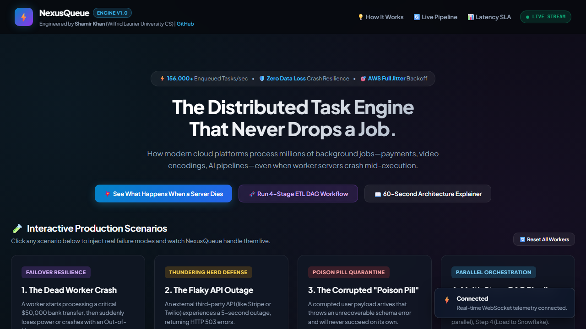

NexusQueue : Distributed Task and DAG Engine
- Engineered an asynchronous background job processing engine benchmarked at 119,000 jobs per second across 50 concurrent worker routines with zero task loss.
- Implemented a Binary Min Heap Priority Queue with O(log n) dispatch, combined with Token Bucket rate limiters and AWS Full Jitter backoff against thundering herds.
- Designed a DAG Workflow Scheduler executing multi stage dependent jobs using Kahn topological sort, paired with automated Zombie Worker Watchdog monitors.
TypeScript
Node.js
Redis
BullMQ
WebSockets
Vitest